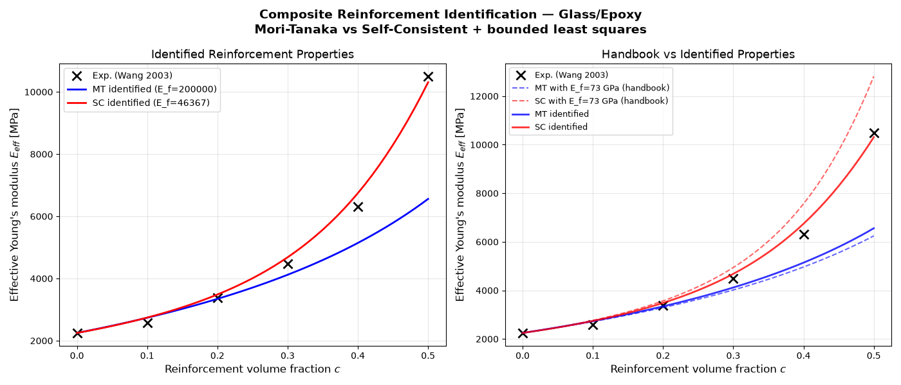

Note
Go to the end to download the full example code.
Composite Parameter Identification using Mori-Tanaka and Self-Consistent
This example demonstrates inverse identification of reinforcement elastic properties in a two-phase composite material. Given experimental effective Young’s modulus data at various volume fractions (Wang 2003), we identify the Young’s modulus and Poisson’s ratio of the reinforcement phase.
Two micromechanical schemes are compared:
Mori-Tanaka (
MIMTN): accurate at low-to-moderate volume fractionsSelf-Consistent (
MISCN): better at high volume fractions (c > 0.3)
Forward model: simcoon mean-field homogenization (L_eff)
Optimization: simcoon.identification() with method="least_squares"
(bounded trust-region reflective least squares, three starting points)
Phases: described in memory, so an evaluation touches no file at all
import numpy as np
import matplotlib.pyplot as plt
import simcoon as sim
from simcoon.identify import identification
from simcoon.parameter import Parameter
from simcoon.solver.micromechanics import Ellipsoid
import os
Problem Setup
We have a glass-particle / epoxy composite. The matrix properties are known:
\(E_m = 2250\) MPa, \(\\nu_m = 0.19\)
The reinforcement properties \((E_f, \\nu_f)\) are unknown and must be identified from experimental effective Young’s modulus measurements at several volume fractions.
The phases are built as objects and passed to L_eff. A candidate
\((E_f, \\nu_f)\) is written into the reinforcement,
Note that simcoon’s key system (simcoon.parameter) remains the tool of choice when
the forward model is an external code driven by input files, such as an
Abaqus job; it is not needed when simcoon itself is the forward model.
def load_experimental_data(filepath):
"""Load experimental E_eff vs volume fraction data."""
data = np.loadtxt(filepath)
return data[:, 0], data[:, 1]
Forward Model
For each set of candidate properties \((E_f, \\nu_f)\), we compute the
effective Young’s modulus at all experimental volume fractions using simcoon’s
L_eff function.
def compute_E_eff(E_f, nu_f, concentrations, umat_name, props_composite):
"""
Compute effective Young's modulus at given volume fractions.
Parameters
----------
E_f : float
Reinforcement Young's modulus [MPa]
nu_f : float
Reinforcement Poisson's ratio [-]
concentrations : array-like
Volume fractions of reinforcement
umat_name : str
Micromechanical scheme ("MIMTN" or "MISCN")
props_composite : numpy.ndarray
Composite definition array [nphases, unused, int1, int2, n_matrix]
Returns
-------
numpy.ndarray
Effective Young's modulus at each volume fraction [MPa]
"""
matrix = Ellipsoid(
number=0,
umat_name="ELISO",
save=1,
nstatev=1,
props=np.array([2250.0, 0.19, 8.8e-5]),
)
reinforcement = Ellipsoid(
number=1,
umat_name="ELISO",
save=1,
nstatev=1,
props=np.array([E_f, nu_f, 0.5e-6]),
)
E_eff = np.zeros(len(concentrations))
for i, c in enumerate(concentrations):
matrix.concentration = 1.0 - c
reinforcement.concentration = c
L = sim.L_eff(
umat_name,
props_composite,
0,
phases=[matrix, reinforcement],
)
iso_props = sim.L_iso_props(L).flatten()
E_eff[i] = iso_props[0]
return E_eff
def residuals(params_opt, c_exp, E_exp, umat_name, props_composite):
"""Residuals E_pred - E_exp; the mean of their squares is the MSE."""
E_f, nu_f = params_opt
try:
E_pred = compute_E_eff(E_f, nu_f, c_exp, umat_name, props_composite)
except Exception:
# NaN residuals: the optimizer rejects the step and shrinks it
return np.full(len(c_exp), np.nan)
return E_pred - E_exp
def identify_reinforcement(
c_exp,
E_exp,
umat_name,
props_composite,
bounds,
verbose=True,
):
"""
Identify reinforcement properties by bounded least squares.
Three starting points (the middle of the log-scaled bounds and two Latin
hypercube samples) guard against a local minimum; each converges in a few
tens of evaluations of the six effective moduli.
Returns
-------
dict
Identified parameters and optimization result
"""
if verbose:
print(f"\n{'=' * 60}")
print(f" Identification with {umat_name}")
print(f"{'=' * 60}")
params = [
Parameter(0, bounds=bounds[0], key="@E_f"),
Parameter(1, bounds=bounds[1], key="@nu_f"),
]
result = identification(
residuals,
params,
method="least_squares",
args=(c_exp, E_exp, umat_name, props_composite),
n_starts=3,
seed=42,
xtol=1e-10,
ftol=1e-10,
gtol=1e-10,
)
E_f_opt, nu_f_opt = result.x
mse = np.mean(result.fun ** 2)
if verbose:
print(f"\n E_f = {E_f_opt:.0f} MPa")
print(f" nu_f = {nu_f_opt:.3f}")
print(f" MSE = {mse:.2e} MPa^2 ({result.nfev} evaluations)")
return {
"E_f": E_f_opt,
"nu_f": nu_f_opt,
"mse": mse,
"result": result,
"umat_name": umat_name,
}
Main Execution
We compare two identification strategies:
Mori-Tanaka (
MIMTN): dilute approximation, best for c < 30%Self-Consistent (
MISCN): accounts for percolation, better at high c
At high volume fractions (c = 0.5), Mori-Tanaka underestimates stiffness and compensates by overestimating \(E_f\). Self-Consistent gives more physically meaningful identified properties.
if __name__ == "__main__":
try:
script_dir = os.path.dirname(os.path.abspath(__file__))
except NameError:
script_dir = os.getcwd()
# -----------------------------------------------------------------
# Load experimental data (Wang 2003)
# -----------------------------------------------------------------
c_exp, E_exp = load_experimental_data(os.path.join(script_dir, "data", "E_exp.txt"))
print("=" * 60)
print(" COMPOSITE REINFORCEMENT IDENTIFICATION")
print(" Glass/Epoxy — Mean-field + bounded least squares")
print("=" * 60)
print(f"\nExperimental data (Wang 2003): {len(c_exp)} points")
for c, E in zip(c_exp, E_exp):
print(f" c = {c:.1f} -> E_eff = {E:.0f} MPa")
# Composite definition: [int1, int2, n_matrix] (Eshelby integration points, matrix index)
props_composite = np.array([50, 50, 0], dtype="float")
# Bounds for identification (E_f, nu_f)
bounds = [(10000, 200000), (0.01, 0.45)]
# -----------------------------------------------------------------
# Identification with Mori-Tanaka
# -----------------------------------------------------------------
result_MT = identify_reinforcement(
c_exp,
E_exp,
"MIMTN",
props_composite,
bounds,
)
# -----------------------------------------------------------------
# Identification with Self-Consistent
# -----------------------------------------------------------------
result_SC = identify_reinforcement(
c_exp,
E_exp,
"MISCN",
props_composite,
bounds,
)
# -----------------------------------------------------------------
# Summary
# -----------------------------------------------------------------
print(f"\n{'=' * 60}")
print(" SUMMARY")
print(f"{'=' * 60}")
print(" Reference glass: E_f ~ 73000 MPa, nu_f ~ 0.22")
print("")
print(f" {'Scheme':<20} {'E_f [MPa]':>12} {'nu_f':>8} {'MSE':>14}")
print(f" {'-' * 56}")
print(
f" {'Mori-Tanaka':<20} {result_MT['E_f']:>12.0f} "
f"{result_MT['nu_f']:>8.3f} {result_MT['mse']:>14.2e}"
)
print(
f" {'Self-Consistent':<20} {result_SC['E_f']:>12.0f} "
f"{result_SC['nu_f']:>8.3f} {result_SC['mse']:>14.2e}"
)
print()
# Note on model limitations
print(" Note: Mori-Tanaka underestimates stiffness at high volume")
print(" fractions and compensates by overestimating E_f. Self-Consistent")
print(" accounts for phase connectivity and gives more physically")
print(" meaningful results for this dataset (c up to 50%).")
# -----------------------------------------------------------------
# Visualization
# -----------------------------------------------------------------
c_model = np.arange(0.0, 0.51, 0.01)
E_MT = compute_E_eff(
result_MT["E_f"],
result_MT["nu_f"],
c_model,
"MIMTN",
props_composite,
)
E_SC = compute_E_eff(
result_SC["E_f"],
result_SC["nu_f"],
c_model,
"MISCN",
props_composite,
)
# Reference with handbook glass properties
E_ref_MT = compute_E_eff(73000, 0.22, c_model, "MIMTN", props_composite)
E_ref_SC = compute_E_eff(73000, 0.22, c_model, "MISCN", props_composite)
fig, (ax1, ax2) = plt.subplots(1, 2, figsize=(14, 6))
# Left: Identified fits
ax1.plot(
c_exp, E_exp, "kx", markersize=10, markeredgewidth=2, label="Exp. (Wang 2003)"
)
ax1.plot(
c_model,
E_MT,
"b-",
linewidth=2,
label=f"MT identified (E_f={result_MT['E_f']:.0f})",
)
ax1.plot(
c_model,
E_SC,
"r-",
linewidth=2,
label=f"SC identified (E_f={result_SC['E_f']:.0f})",
)
ax1.set_xlabel("Reinforcement volume fraction $c$", fontsize=12)
ax1.set_ylabel("Effective Young's modulus $E_{eff}$ [MPa]", fontsize=12)
ax1.set_title("Identified Reinforcement Properties", fontsize=13)
ax1.legend(fontsize=10)
ax1.grid(True, alpha=0.3)
# Right: Reference vs Identified
ax2.plot(
c_exp, E_exp, "kx", markersize=10, markeredgewidth=2, label="Exp. (Wang 2003)"
)
ax2.plot(
c_model,
E_ref_MT,
"b--",
linewidth=1.5,
alpha=0.6,
label="MT with E_f=73 GPa (handbook)",
)
ax2.plot(
c_model,
E_ref_SC,
"r--",
linewidth=1.5,
alpha=0.6,
label="SC with E_f=73 GPa (handbook)",
)
ax2.plot(c_model, E_MT, "b-", linewidth=2, alpha=0.8, label="MT identified")
ax2.plot(c_model, E_SC, "r-", linewidth=2, alpha=0.8, label="SC identified")
ax2.set_xlabel("Reinforcement volume fraction $c$", fontsize=12)
ax2.set_ylabel("Effective Young's modulus $E_{eff}$ [MPa]", fontsize=12)
ax2.set_title("Handbook vs Identified Properties", fontsize=13)
ax2.legend(fontsize=9)
ax2.grid(True, alpha=0.3)
fig.suptitle(
"Composite Reinforcement Identification — Glass/Epoxy\n"
"Mori-Tanaka vs Self-Consistent + bounded least squares",
fontsize=14,
fontweight="bold",
)
plt.tight_layout()
plt.show()

============================================================
COMPOSITE REINFORCEMENT IDENTIFICATION
Glass/Epoxy — Mean-field + bounded least squares
============================================================
Experimental data (Wang 2003): 6 points
c = 0.0 -> E_eff = 2250 MPa
c = 0.1 -> E_eff = 2580 MPa
c = 0.2 -> E_eff = 3390 MPa
c = 0.3 -> E_eff = 4480 MPa
c = 0.4 -> E_eff = 6310 MPa
c = 0.5 -> E_eff = 10500 MPa
============================================================
Identification with MIMTN
============================================================
E_f = 200000 MPa
nu_f = 0.450
MSE = 2.84e+06 MPa^2 (54 evaluations)
============================================================
Identification with MISCN
============================================================
E_f = 46367 MPa
nu_f = 0.010
MSE = 5.06e+04 MPa^2 (93 evaluations)
============================================================
SUMMARY
============================================================
Reference glass: E_f ~ 73000 MPa, nu_f ~ 0.22
Scheme E_f [MPa] nu_f MSE
--------------------------------------------------------
Mori-Tanaka 200000 0.450 2.84e+06
Self-Consistent 46367 0.010 5.06e+04
Note: Mori-Tanaka underestimates stiffness at high volume
fractions and compensates by overestimating E_f. Self-Consistent
accounts for phase connectivity and gives more physically
meaningful results for this dataset (c up to 50%).
Total running time of the script: (0 minutes 1.995 seconds)